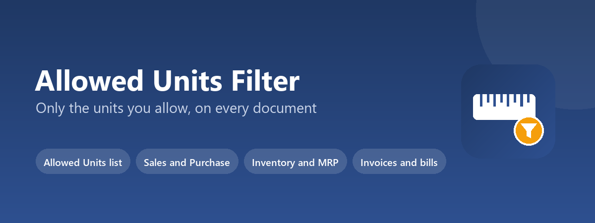

Choose the units each product may be handled in, and only those are offered in Sales, Purchase, Inventory, Manufacturing and Accounting.
A product sold by the box and the pallet should not end up on an order in single units by mistake. Pick the allowed units once on the product form. From then on, the unit drop-down on order, transfer, manufacturing and invoice lines for that product offers only those units.
📏 Allowed Units fieldSelect the allowed units on the product's General Information tab; they apply to all its variants. |
🛒 Sales and PurchaseSales order lines and purchase order lines offer only the allowed units. |
📦 Inventory transfersTransfer lines offer only the allowed units of each product. |
🏭 Manufacturing ordersThe same goes for manufacturing orders and for their component and finished product lines. |
📄 Invoices and billsCustomer invoice lines and vendor bill lines offer only the allowed units. |
👍 Optional per productA product with no allowed units selected keeps offering every unit of its category, as in standard Odoo. |
Odoo 18.0 • Community & Enterprise • depends on Sales, Purchase, Inventory, Manufacturing and Invoicing • Licence LGPL-3
Odoo implementation and development. thecodelegion.com